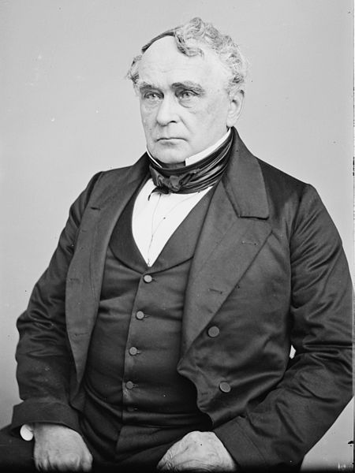
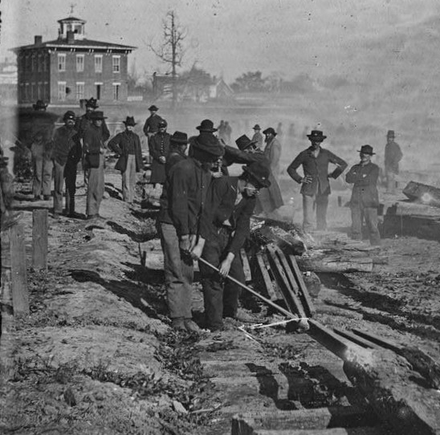

|
Rules of war are designed to keep war "civilized."
Generally these rules are concerned with two main issues.
The first is how much force is appropriate. The second is
what is a legitimate target for a warring army and what is
not.
Before the Civil War, the rules of war generally were not
formally recorded. Instead, combatants were expected to
behave in accordance with established custom and their sense
of fair play. During the Revolutionary War, for example, the
|

Francis Lieber
|
uniforms and tactics used by British Redcoats left them
highly exposed to gunfire. British commanders knew this, but
they did not change their approach because they had been
trained to believe that this was the polite way to fight a
war. During the Civil War, many officers and soldiers
continued to adhere to these unwritten rules. For example,
when the Confederate ordnance department developed land
mines, some Confederate commanders refused to use them
because they thought them ungentlemanly.
Ultimately, however, the era of polite warfare and
unwritten rules had come to an end. The Civil War was a time
of transition between the limited warfare of the past and
the "total war" that was to become the standard in the 20th
century. Recognizing this new reality, Union leaders moved
to formalize the rules of war, issuing the Lieber Code in
May of 1863. Prepared by legal expert Francis Lieber, the
Lieber Code contained a list of 157 rules governing the
conduct of Union armies and soldiers in the field. The Code
addressed a broad variety of topics - spies, prisoners,
surrenders, non-combatants, and so forth.
The Lieber Code was not a treaty, and so Confederate
soldiers were not subject to its conditions. It is perhaps
worth asking, then, why Union leaders would willingly place
such limits on their armies. In part, they were legitimately
concerned with some of things that Union soldiers and
officers were doing. Most of the men who fought in the Civil
War were not professional soldiers, and so had not spent
their careers being taught to behave with restraint in a
time of war. As the Civil War became increasingly brutal,
and as participants on both sides grew increasingly
desperate, there were numerous incidents of excessive
violence, or violence against inappropriate targets. Such
incidents undermined support for the war among Northerners
and among the international community, while often provoking
violent retaliation from the Confederacy.
As the Lieber Code tried to limit the brutality of "total
war" in some contexts, however, it also justified it in
other contexts. Although the code placed "civilized" limits
on what Union soldiers were allowed to do, it also provided
broad discretionary powers for Union commanders to do what
they deemed "necessary." For example, Sherman's 1864 march
|

Sherman's soldiers
destroy railroad tracks in Atlanta.
|
through Georgia might have been unthinkable under the
informal codes of conduct in place at the beginning of the
war, but it was entirely justifiable under the terms of the
Lieber Code.
Ultimately, the Civil War affected the rules of war in
two important ways. The transition to total war continued
unabated in the post-Civil War era. The Indian Wars of the
1870s were incredibly violent. The Spanish-American and
Philippine Wars also had their share of brutality, and World
War I may have set a standard that will never be matched in
terms of the lack of restraint shown by combatants on both
sides.
At the same time, while the Civil War helped to make war
more violent, it also provided a precedent for trying to
address that violence, as formal and comprehensive
agreements about the conduct of war became an international
standard. In 1864, for example, as the Civil War was still
being waged, a consortium of European powers signed the
Geneva Convention. The agreement, which governs the
treatment of prisoners and other conduct in war, remains in
effect to the present day, and has been joined by a number
of other international agreements about armed conflict.
Source: Joan Waugh, ed., Facts on File Encyclopedia of American
History: Civil War and Reconstruction, 1856 to 1869 (New York: Facts on
File, 2003), 305-306.
|